by Abraham Kandel
CRC Press, CRC Press LLC
ISBN: 084934297x Pub Date: 11/01/91
|
|
Fuzzy Expert Systems
by Abraham Kandel CRC Press, CRC Press LLC ISBN: 084934297x Pub Date: 11/01/91 |
| Previous | Table of Contents | Next |
In the current section, we propose an inference mechanism suitable for hardware implementation. It is based on the concepts of fuzzy implication, or fuzzy rules, and the compositional rule of inference. A fuzzy rule is defined by the relation between observation (or antecedent) and action (or conclusion). For a given set of fuzzy rules, the action is inferred from both a certain observation and the fuzzy relation which is composed from the rules.
If A and B are fuzzy subsets representing linguistic labels, over the universe of discourse U and V, respectively, then a decision rule in the form of “if A then B” is defined by binary membership functions of A and B so that:
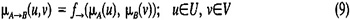
More specifically, suppose A1,A2, . . . ,AN are fuzzy subsets of U and B1,B2, . . . ,BN are fuzzy subsets of V, a fuzzy relation is defined by rules so that:
| Rule 1. | If A1 then B1 | |||
| Rule 2. | ELSE | If A2 then B2 | ||
| . | . | |||
| . | . | |||
| . | . | |||
| Rule N. | ELSE | If AN then BN | ||
Then each rule is combined by the ELSE connective to yield an overall fuzzy relation R.
Ri is a fuzzy relation constructed from rule i, and linguistic values Ai and Bi. The connective ELSE is denoted by the function fELSE, then the overall relation R is defined by:
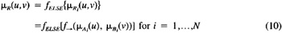
The connective fELSE is interpreted as an or connective in order to derive an overall fuzzy relation R because the relation R should consist of rule 1 or rule 2 or … or rule N. Hence the overall relation R is denoted and defined as:
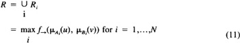
Suppose we have a fuzzy observation A′ and the overall relation R; then the resultant action B′ is inferred by the compositional rule of inference, that is:
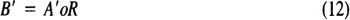
The membership value of B′ is calculated by so called the “max-min operation” defined by (7):
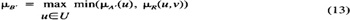
To follow up the preceding discussion, we propose an architecture of a fuzzy inference engine suitable for a hardware implementation.
Let us consider the i-th rule of a set of N rules. Given an observation A′ and a rule Ri, the action B′i is inferred and defined as follows:
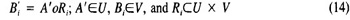
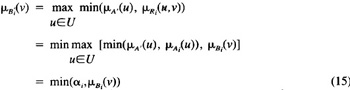
where
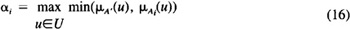
The operation given by Equation 14 and Equation 15 is illustrated in Figure 4. Then the maximum of B1,B2, … ,BN, determine the overall resulting decision (or action) B′, that is
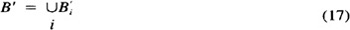
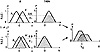
Figure 4 A Mechanism of “max-min operation” for B′ = A′ o (A → B)
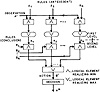
Figure 5 A functional architecture of fuzzy inference mechanism.
The inference mechanism given before can be realized by the logical architecture with two-level hierarchy as shown in Figure 5. The proper choice of αis is the first-level decision, while the proper choice of B′ is the second-level decision. The operation serially done in each column of the structure is equivalent to the operation which is illustrated in Figure 4. It has been shown that the logical architecture obtained here is basically the same even for multiple observation and multiple action cases.12 The advantage of the proposed structure is that max-min operations are realized by the ordinary or and and gates, respectively.
The VLSI inference engine consists of three major parts: a rule set memory, an inference processing unit, and a controller. The inference mechanism described in the previous section executes all the rules in parallel. This high degree of parallelism requires a wide bus between the rule set storage unit and the inference processing unit of the engine. Because of the very high rate of communication between these two elements, we decided to store the rules on a chip. Otherwise, the restriction of the pin counts prevents the effective use of the parallelism.
Since this is the first version of the design, we emphasize simplicity. One important decision is to process individual rules serially. This simplifies the design and increases its extensibility. The logic structure of the fuzzy inference mechanism is mapped nicely to the VLSI structure. There is an one-to-one correspondence between the basic operations of fuzzy logic and the basic units of the VLSI inference processing unit. The three major parts of the inference engine are described in the following section.
The rule set can be stored using either a random access memory (RAM) or a read only memory (ROM). The advantage of using RAM is its flexibility. Depending on the application, the rule set can be loaded from off-chip. On the other hand, ROM takes much less area for the same amount of data and operates faster. The control unit of the inference engine can be very simple since we do not need to load a rule set from off-chip. Also, we have a well-engineered ROM generator in our design system, so that we used ROM for the storage of the inference rules.
| Previous | Table of Contents | Next |
){kind=link}
){kind=link}